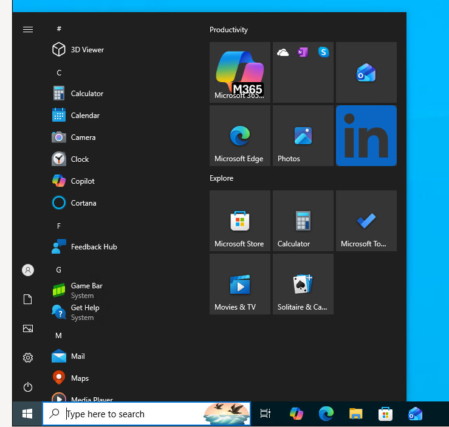

Windows 10 Pro runs on kcore as a normal VM. The disk is built once, on a machine with KVM, from installation media you are licensed to use. The node then boots that disk on Cloud Hypervisor. The desktop is Remote Desktop on the guest. Cloud Hypervisor does not attach a VGA console, and Windows 10 does not offer the Server serial console (SAC), so the way in is an SSH port forward from your workstation to the guest.
The same path already runs
Windows Server 2022.
Windows 10 uses the same kcore_vm and a different image: the
w10 virtio drivers, OpenSSH, and Remote Desktop. The recipe is
kcorehypervisor/windows-guest.
It holds scripts only. Keep the ISO, the finished disk, and the Administrator password on the build machine.
1. Build the disk
You need four things on the build machine:
- An x86_64 Linux host with
/dev/kvmand Nix. - A Windows 10 ISO you are licensed to install. The profile used here is Windows 10 Pro, which accepts incoming Remote Desktop.
- Free space for a sparse 40 GiB disk. The file stays small until Windows writes it.
- The pinned virtio drivers. The recipe downloads virtio-win 0.1.240 and checks its SHA256. Newer virtio-win builds fail on Cloud Hypervisor: 0.1.271 and later break the network driver, and 0.1.285 and later can bugcheck the disk driver when discard is advertised.
Clone the recipe, point WIN_ISO at your ISO, and run the Windows 10 profile.
--list-images prints the edition names inside that ISO.
git clone https://github.com/kcorehypervisor/windows-guest
cd windows-guest
nix develop -c ./build-win10.sh --list-images
WIN_ISO=/path/to/windows-10.iso nix develop -c ./build-win10.shThe build does five things:
- Downloads virtio-win 0.1.240 and checks the pinned SHA256.
- Builds a second CD with the unattended answer file,
viostor, andNetKVMfrom thew10driver directories. - Installs Windows 10 Pro under QEMU onto a virtio disk, using OVMF. The empty disk is tried first; setup then starts from the DVD. After installation the disk boots on its own.
- Installs OpenSSH, enables Remote Desktop, and shuts the guest down.
- Writes a generated Administrator password to
build/admin-password.txt(mode 0600). SetWINDOWS_ADMIN_PASSWORDbeforehand if you want to choose one (8–64 letters and digits).
Consumer Windows 10 setup stops when the answer file has no product key. The Windows 10
profile inserts Microsoft's public Pro setup key so installation can finish. That key
does not activate Windows. Watch the installer on VNC at 127.0.0.1:5900 if
it stops on a region or keyboard page.
The finished disk is build/windows-10.raw. Pack a qcow2 for upload:
qemu-img convert -c -O qcow2 build/windows-10.raw windows-10.qcow2
qemu-img info windows-10.qcow2
qemu-img info reports a virtual size of 40 GiB. That virtual size is
what the node allocates. The compact file on disk is smaller.
2. Create the VM
Upload the qcow2 to the node that will run the guest, then create the VM. A current
kcore node already starts every guest with Hyper-V CPU enlightenments
(kvm_hyperv=on). Windows needs those enlightenments. Linux ignores them.
Leave cloud-init and SSH keys unset. Windows logs in as the Administrator account from
the image.
--storage-size-bytes 42949672960 is 40 GiB, the virtual size, matching
the image. LVM converts the qcow2 to a raw volume before Cloud Hypervisor opens it.
--wait returns when the VM is running. The convert takes several minutes
on a 40 GiB disk.
kctl --node 192.168.40.119:9091 node upload-image \
-f windows-10.qcow2 \
--name windows-10.qcow2 \
--format qcow2
kctl create vm win10-01 \
--cpu 2 --memory 4G --network default \
--storage-backend lvm --storage-size-bytes 42949672960 \
--target-node node-119 \
--image-path /var/lib/kcore/images/windows-10.qcow2 \
--image-format qcow2 \
--wait
kctl get vms then shows win10-01 running. The guest is on the
node's NAT network. On a default kcore node that network is 10.240.0.0/24.
This VM received 10.240.0.22. The workstation has no route to that
network. SSH and Remote Desktop both go through the node.
3. The same VM in Terraform
kctl create and Terraform create the same object. The provider is
kcorehypervisor/kcore 0.5.0. Point image_path at the file
uploaded in the previous step. There is no separate Windows guest type.
terraform {
required_providers {
kcore = {
source = "kcorehypervisor/kcore"
version = "0.5.0"
}
}
}
provider "kcore" {
controller_address = "192.168.40.107:9090"
tls_cert_path = var.tls_cert_path
tls_key_path = var.tls_key_path
tls_ca_path = var.tls_ca_path
}
resource "kcore_vm" "win10" {
name = "win10-01"
cpu = 2
memory_bytes = 4 * 1024 * 1024 * 1024
storage_backend = "lvm"
storage_size_bytes = 40 * 1024 * 1024 * 1024
image_path = "/var/lib/kcore/images/windows-10.qcow2"
image_format = "qcow2"
target_node = "node-119"
nic {
network = "default"
model = "virtio"
}
desired_state = "running"
}4. Forward Remote Desktop
The recipe enables Remote Desktop and opens its firewall group, so the guest listens on TCP 3389. From the workstation, forward a free local port to that guest port and leave the SSH session open. The node login is the one you already use for that machine.
ssh -N -L 3390:10.240.0.22:3389 root@192.168.40.119
The first number is the port on your workstation. The last number is the port on the
guest. They do not have to match. Port 3389 on a Linux workstation is often already
xrdp. Binding the forward there fails with Address already in use, and a
Remote Desktop client pointed at 127.0.0.1 with no port opens that local
Linux session. Choose a free local port, here 3390, and keep 3389 on the Windows side.
In Remmina, or any Remote Desktop client:
- Server:
127.0.0.1:3390 - Username:
Administrator - Password: the contents of
build/admin-password.txtfrom the build machine - Domain: leave blank
SSH to the guest uses the same jump and the same account, on port 22:
ssh -J root@192.168.40.119 Administrator@10.240.0.225. The desktop
The session below is the Windows 10 Start menu on win10-01, reached
through that forward. The guest is Windows 10 Pro, build 19045, with the virtio disk
and network drivers installed by the recipe.
